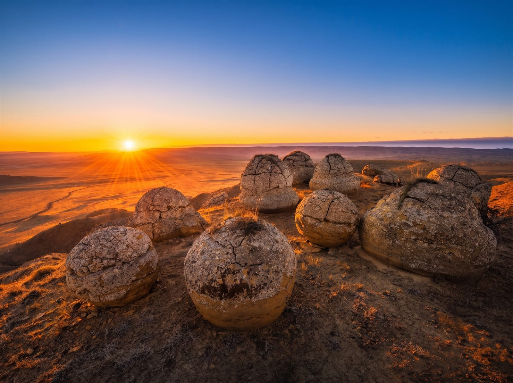

Фото тураtours/tour-1.jpg
1 день
Подробно
ОДНОДНЕВНЫЙ ТУР
Лучшие пейзажи Мангистау за один насыщенный день. Загадочные шарообразные конкреции Торыша, белая гора Шеркала и фантастическая Долина Замков Айракты — с обедом прямо в степи под открытым небом.
150 €
с человека
за машину 350 €